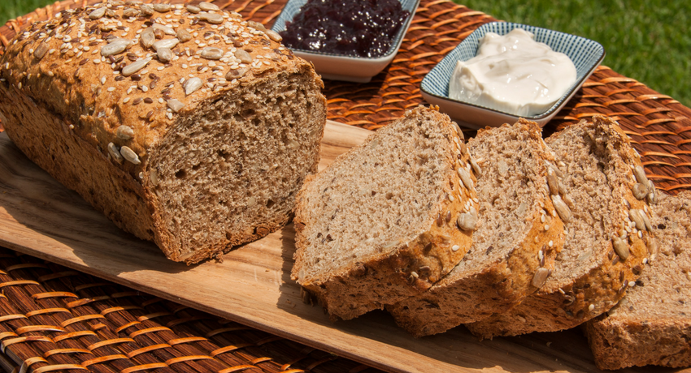

Somos una empresa pequeña, nos estamos haciendo a conocer poco a poco. En éstos tiempo cuesta ganar la confianza de las personas. Pero sólo que nos prueben el producto, hara que nos pidan otra vez.
EL PAN ARTESANAL O INTEGRAL
De pocos alimentos podremos decir que lo comemos en todas las casas y todos los días del año… El pan es un imprescindible en nuestras mesas, pero no siempre elegimos el mejor. En los últimos años nos hemos habituado a consumir panes industriales a los que se les han añadido grandes cantidades de conservantes y demás aditivos. Seguro que os suena eso de que se ponga duro con el paso de las horas, ¿verdad? Por eso, lo ideal, es comprar (o hacer) pan casero. La diferencia real entre el pan blanco y el integral es el aporte de vitaminas, minerales y fibra.
Especialmente recomendados para quienes siguen dietas de adelgazamiento (la fibra aumenta la sensación de saciedad y previene el estreñimiemto); las personas que tienen diabetes (la fibra ayuda a regular los niveles de azúcar en sangre), personas que tienen el colesterol elevado (la fibra ayuda a reducirlos) y personas con estreñimiento (mejora el tránsito intestinal).
Es por esto que incluir el pan integral en nuestra dieta aportaría equilibrio además de otras fuentes de nutrientes y sustancias no nutritivas como: hidratos de carbono complejos, sodio, fibra, fósforo, selenio, hierro, magnesio , titamina y niacina.
